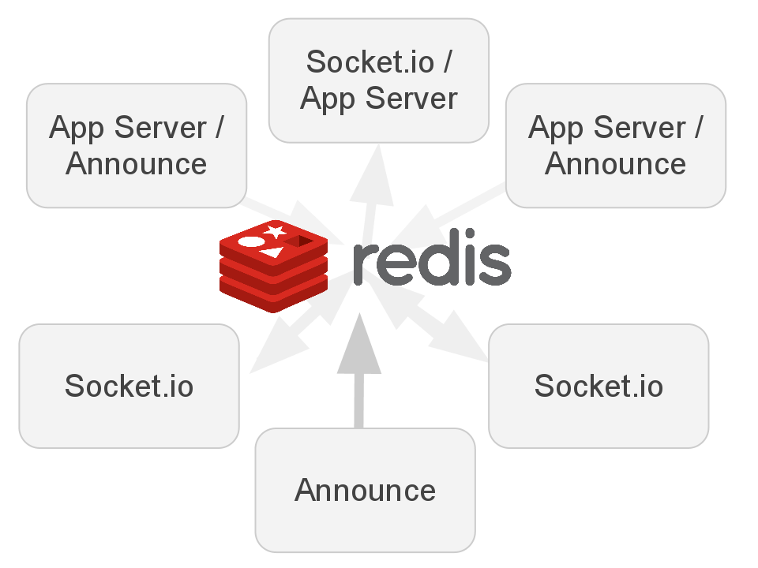
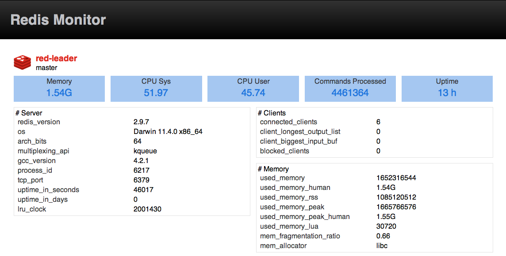

More Realtime

@dshaw
MOAR Realtime!
@dshaw
More Socket.io
@dshaw
Way More Redis!
@dshaw
3 Things
- RedisStore Docs
- Socket.io-Announce
- ?
Socket.io RedisStore

That's awesome.
Socket.io RedisStore
You know what's cooler than one process
(or even a cluster of processes)?
A cluster of servers.
Socket.io RedisStore
-
Lightweight key/value persistence in Redis.
io.sockets.on('connection', function(socket) { var nick = 'dshaw' socket.set('nickname', nick, function() { socket.emit('nickname', nick) }) }) -
Inter-process dispatch.
io.sockets.emit('newuser', { nick: nick });
Socket.io RedisStore
Cool. But how?

Up until today, YOYO!
RedisStore Docs
github.com/dshaw/RedisStore-Docs

Socket.io-Announce
Network connected realtime services

Traditional Socket.io
Tied to a web server
Applies to the old school:
Express + Socket.io
As it does to the newest:
Tako
Socket.io-Announce
Look ma, no server
Just drop in Announce and broadcast data
directly with your Socket.io connected users!
Socket.io-Announce
var announce = require('socket.io-announce').createClient()
, symbols = 'THOO GOOF EXIT BOP SDD ALPP RIGM OPPL HPBG'.split(' ')
function dataStream () {
var n = Math.round(Math.random()*8)
, data = {
id: (Math.abs(Math.random() * Math.random() * Date.now() | 0))
, symbol: symbols[n]
, price: (Math.random()*1000).toFixed(2)
, n: n
}
announce.emit('quote', data)
}
setInterval(dataStream, 800)
Elsewhere, Socket.io Server
var sio = require('socket.io')
, RedisStore = sio.RedisStore
, app = connect.createServer(connect.static(path.join(__dirname, './')))
, settings = { store: new RedisStore({
nodeId: function () { return 'socketio-1' }
}) }
, io = sio.listen(app, settings);
app.listen(port);
Socket.io Client-side
<script src="/socket.io/socket.io.js"></script>
<script>
var socket = io.connect()
socket.on('quote', function (data) {
$('<span/>', {
id: data.id,
html: data.symbol + ' : ' + data.price }).appendTo('#ticker')
// if the last digit of the prices matches the id, buy.
var m = ((data.price).match(/[-+]?([0-9]*([0-9]))?\.[0-9]+/))
, watch = m && m[2];
if (nodeId && watch == nodeId) {
$('#'+data.id).addClass('reserved')
data.buyer = nodeId
data.quantity = Math.round(Math.random()*5)*5
socket.emit('purchase', data)
}
});
</script>
Socket.io-Announce
github.com/dshaw/socket.io-announce
Insanely simple.
3 Things
- RedisStore Docs
- Socket.io-Announce
- Redis Monitor
Redis is Awesome

You know that.
RedisLive
Monitoring with MONITOR is bad.
The MONITOR command is good and useful for debugging, but not monitoring.
redis.io/commands/monitor
Redis Monitor
Monitor a single Redis or a cluster of Redis servers.
Now visualize what's going on on those servers.

Redis Monitor
Use All The Things
- Socket.io RedisStore
- Socket.io-Announce
Redis Monitor
github.com/dshaw/redis-monitor
Demo time!
One More Thing
More, More Realtime
-
Socket.io-Zero
ZeroMQ dispatch and Redis k/v
github.com/dshaw/socket.io-zero
-
Socket.io-Mongo
MongoDB store with Mubsub dispatch
github.com/kof/socket.io-mongo
Thank you!
@dshaw
More at: github.com/dshaw